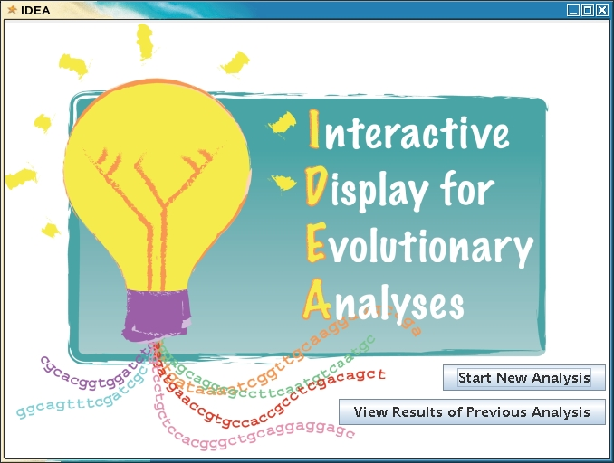

IDEA
Interactive
Display for
Evolutionary
Analyses
Version 2.5 (December 21, 2009)
Documentation Updated November 29, 2010
1 Introduction
2
Running IDEA
3 Performing an
Analysis
4
Viewing Results
5 New in IDEA 2.4
6 Further Information
IDEA (Interactive Display for Evolutionary Analyses) provides
a graphical interface for PAML (Phylogenetic Analysis by
Maximum Likelihood, Ziheng Yang, 1997), a suite of programs for
conducting molecular evolution analyses on nucleotide and amino-acid
data. IDEA allows you to run
either of the PAML programs codeml
or baseml
on
a single dataset or on multiple datasets simultaneously.
Among other things, codeml
and baseml
allow you to obtain maximum
likelihood estimates of numbers of substitutions per branch and per
site and to compare multiple models of molecular evolution given the
data and a phylogenetic tree for the sequences.
IDEA
allows you to:
• Run either of the PAML programs codeml or baseml.
• Optionally generate phylogenetic trees with PhyML, using maximum likelihood, or with
PHYLIP, using maximum parsimony
(small datasets) or neighbor-joining (large datasets).
• Perform multiple runs of codeml with
different
starting ω
(dN/dS)
values and merge their results for increased accuracy.
• Save parameter values for future use.
• Analyze many datasets in parallel.
• Monitor progress step by step.
If
you run a `site models' analysis (seqtype = 1
, model
= 0
), you can use IDEA's graphical output interface to:
• Easily identify genes and sites under positive
selection.
• Visualize selective pressure along a gene.
IDEA is maintained by Amy
Egan.
IDEA Research Team: Amy
Egan and Joana
C. Silva
Inquiries may be posted to the IDEA
Support and Discussion Forum.
2 Running
IDEA
After IDEA has been installed,
it may be run by entering the IDEA installation directory (the
directory in which idea-X.X.X.tar.gz
was saved or, equivalently, the directory in which the executable idea
is found) and typing idea
. For convenience, you may wish to add IDEA to your path;
doing so will allow you to run IDEA by simply typing idea
while in
any directory.
The command for changing your path depends on
which shell you are using. Type echo
$0 to find
out which shell you are using.
In tcsh:
set PATH
= (${PATH}:/your/IDEA/installation/directory
)
In bash:
export
PATH=$PATH:/your/IDEA/installation/directory
To add IDEA to your path permanently, add the appropriate command above
to the .cshrc
or .bashrc
file in your home directory.
Before starting an analysis, you should be sure your input
data is in
the expected format.
IDEA expects different input files depending on
whether you
have multiple datasets or a single dataset and whether you intend to
use existing phylogenetic trees. All these files should be in
the same directory (or directory hierarchy).
For each dataset, IDEA expects a single nucleotide alignment
file in PAML format (here referred to as PAMLseq), which is a
gapped FASTA format with a header.
The format of the header is
<space> n
<space> l
, where n
is
the number of sequences and l
is the length of the nucleotide alignment.
Note:
We recommend avoiding sequence names beginning with numbers.
Below is an example PAMLseq alignment file.
5 537
>species1
ATGGCATGTAAAGTTGATAAAGCTTTAGAGCATTCTACCCAAAATGAAGCACCCTCA---
---------AAAAATTATATGAACAATTTGTGTTATTACAAAAATAATGAATTAAAAAAA
ATAGACTCATCATATTTTCAAGATAAGTATTTAGGATTATTTTTTGGAGCTTCATGGTGT
AAATATTGTGTATCATTTATAAATAATTTGAATTTATTTAAAACCTACTTTCCCTTTTTT
GAAATAATATATATACCATTTGATCAAACATATACAGATTATATCAATTTTTTAAAAAAT
ACTAATTTTTATAGTTTACCTTTTGATAATTATTTATATATAGCTAATAAATTTAAAGTC
ACAAATTTGCCATCTTTTATTATTATAGCACCCAATAATAATATCCTTGTTAGGGATGGA
GTGCAATTAATTAAAACTGACAACTATATAAACAACTTCAAATCCTTGATAAAAAATTAT
ACAATACACCCCAAAACATTCAAATCAAATAATCGATTTTTCGATTTATTCTACAAT
>species2
ATGGCTTGTAAAGTTGATAAAGCTCCAGAGCATCCTACCCAAAATGAAGTACCCTCA---
---------CAAAATTATATGAACAATTTATGTTATTACAAAAATAATGAATTAAAAAAA
ATAGACTCATCATATTTTCAAGATAAATATTTAGGATTATTTTTTGGAGCCTCATGGTGT
AAATATTGTGTATCATTTATAAATAATTTGAATTTATTTAAAACCTACTTCCCCTTCTTT
GAAATCATATATATACCATTTGATCAAACATATACAGATTATATTAATTTTTTAAAAAAT
ACAAATTTCTATAGCTTACCTTTTGATAATTATTTATATATAGCTAATAAATTTAAAGTC
AAAAATTTACCATCATTTATTATTATAGCACCCAATAATAATATCTTG---AGGGATGGT
GTGCAATTAATTAAAACAGACACCTATCTAAATAATTTCAAATCATTGATAAAAAATTAT
ACAATACACCCAAAAACATTCAAATCAAATAACCGATTTTTCGACTTATTCTACAAT
>species3
ATGGCATGTAAAGTTGATAAAGTTTTAGAGCATCCTACCCAAAATGAAGAAACCTCA---
---------AAAAATTATATGAACAATTTGTTTTATTACAAAAATAATGAATTAAAAAAA
ATAGACTCATCATATTTTCAAGATAAATATTTAGGATTATTTTTTGGAGCCTCATGGTGT
AAATATTGTGTATCATTTATAAATAATTTAAATTTATTTAAAACTTATTTTCCTTTTTTT
GAAATTATATATATACCATTTGATCAAACATATACAGATTATATTAATTTTTTAAAAAAT
ACAAATTTTTATACTTTACCTTTTGATAATTATTTATATATAGCTAATAAATTTAAAGTC
AAAAATTTGCCATCTTTTATTATTATAGCACCAAATAATAATATACTTGTTAGGGATGGA
GTACAATTAATTAAAACTGACAATTATGTAAATAATTTCAAATCTTTGATAAAAAATTAT
ACAATACACCCCAAAACATTCAAATCAAATAATCGATTTTTCGACTTATTCTACAAT
>species4
ATGGCGTGCCAAGTTGATAACCCCCCTAAAACATACCCAAACGATAAAACAGCTGAATAC
GAAAAGTACGCAAATTATATGAACTATCTATATTATTATCAAAATAATGAATTAAAAAAA
ATCGATTCCTCTTATTTTAAAGATAAATATTTAGGATTATTTTTTGGAGCTTCATGGTGT
AAATACTGTGTAACCTTTATAGATAGCTTAAATATATTTAAAAAGAACTTCCCCAATGTT
GAAATTATATATATACCATTTGATAGAACATATCAAGAGTACCAATCCTTTTTAAAAAAT
ACAAACTTTTATGCTTTACCTTTTGATAATTATTTATATATATGTAAAAAGTATCAAATA
AAAAATCTACCTTCCTTTATGTTAATTACACCTAATAATAATATACTAGTAAAGGATGCA
GCACAATTAATTAAAACAGATGAATATATAAATAATTTAAAATCATTAATAAAAAATTAT
ATCATACATCCTAAAACGTTTCAATTTAATAATCGCTTTTTTGATTTGTTTCGTAAT
>species5
ATGAAATGCCAAGTGGATCGCCCCGTTACACCAAACGAAGAGCTAAATGGGGGCCAACAA
AATGTAGCCAAAAATTACATCCCCCATTTGTATCAATTCCAAAATAATGAAATGAAAAAA
ATCGATGCGTCTTACTTTGATAATAAATATCTGGGGCTATTTTTTGGAGCATCCTGGTGC
AGGTATTGCGTAACTTTCATCCAAAAAATAAATTTTTTTAAAAAGAATTTCCCCTTTATA
GAAATTATATACATCCCTTTTGACAAGACATATAATGATTATATAGCTTTCCTAAAAGGG
ACCGACTTTTACAGCCTTCCTTTTGATAACTATCTCTACGTTTGCAAAAAATTTAATGTT
CAAAATTTGCCATCCTTTATGATCATAGCCCCCAACAACAATGTGCTCGTCAAGGATGCC
GTGCAGCTCATCAAGACGGATGCCTACGTGGCGAACTTCAAGTCGTTGGTGAAAAATTAC
ACAATTCACCCGAACCAGTTTAAGTTTGGCAACCGATTTTTCGACTTATTTTGCGCA
Phylogenetic trees are required for an analysis. IDEA can
create these tree files for you using PhyML or PHYLIP (assuming the
desired program is installed on your system). PhyML estimates phylogenies using a maximum
likelihood approach. When using PHYLIP, phylogenetic trees will
be estimated using
maximum parsimony if six or fewer taxa are present. Otherwise, the
neighbor-joining algorithm will be used. If multiple trees are found,
the first one reported is used as input for PAML.
If you prefer to use
trees that you have already created, your tree(s) should be in unrooted
format. If you are running IDEA on multiple datasets, you may
have a separate tree file for each dataset.
When running IDEA on multiple datasets, an additional file is
required.
This file should list the name of each PAMLseq input file,
one filename per line. Below is an example dataset list:
gene1.PAMLseq
gene2.PAMLseq
gene3.PAMLseq
If you intend to use existing phylogenetic trees, your dataset list
should contain a second column listing the name of the tree file for
each dataset. The first and second columns should be
separated by a tab. Below is an example dataset list that
includes tree filenames:
gene1.PAMLseq
gene1.tree
gene2.PAMLseq
gene2.tree
gene3.PAMLseq
gene3.tree
Note that IDEA interprets the alignment and tree filenames you specify
as relative to your input directory. They may be organized in
subdirectories if you prefer. Below is an example that uses
subdirectories:
set1/alignments/gene1.PAMLseq
set1/trees/gene1.tree
set1/alignments/gene2.PAMLseq
set1/trees/gene2.tree
set2/alignments/gene3.PAMLseq
set2/trees/gene3.tree
Once you have prepared your input
files, you are ready to begin your analysis by running the command idea .
You should see the following window:
Fig. 1:
IDEA Start Page

After you choose "Start New Analysis", you will have the option to set
multiple parameters on subsequent pages. Some of these
parameters are described below.
| PAML
program |
Choose codeml to perform
codon- or amino-acid-based analysis.
Choose baseml
to perform nucleotide-based analysis. |
| IDEA mode |
Multi-dataset mode is the preferred method for
analyzing multiple datasets.
It uses grid resources to execute many jobs simultaneously. |
Dataset
name list
(multi-dataset mode) |
The name of the dataset list file described in section 3.1.3. |
Input
directory
(multi-dataset mode) |
This directory should contain all the files described
in section 3.1,
except
possibly the dataset list. |
Output
directory
(multi-dataset mode) |
This is the directory where all output of an IDEA run
will go.
It is recommended that this not be the same as the input directory.
If you specify a directory that does not already exist, IDEA will
attempt to create it for you.
It is recommended that no other files be stored in this directory. |
| runmode |
If you have only two sequences for each dataset and are
running codeml,
set runmode
to -2 to perform a pairwise analysis. This will save
computation time and allow you to
view a specialized
output display.
If your dataset list includes both pairwise and non-pairwise datasets,
setting runmode
to -2 will result in a pairwise analysis for the pairwise datasets and
a standard analysis for the non-pairwise datasets.
Setting runmode
to 0 will always result in a standard analysis for all datasets.
Extra ω
values are ignored in pairwise mode, as are certain PAML parameters. |
Extra
omega values
(codeml) |
This IDEA feature allows you to specify additional
starting values for ω.
Separate multiple values with spaces.
PAML will be run once for each starting value,
including the first starting value given as the parameter omega in the
left column.
Afterwards, IDEA will choose the best run for each dataset and
evolution model.
Extra ω
values are ignored in pairwise mode (runmode -2). |
| PAML
Parameters |
Mouse over the  icon next
to a parameter for a brief note on that parameter. icon next
to a parameter for a brief note on that parameter.
For more detailed documentation, please refer to the PAML manual
(version 4
or 3.15).
|
You may notice that your entries for some parameters are validated by
IDEA for your convenience. In particular, IDEA alerts you if
the
names of your sequence, tree and/or output files are too long (which
would cause PAML to fail) and checks for errors in
user-loaded configuration files. IDEA's input validation is
by no means
exhaustive, and you are encouraged to ensure that your parameter
settings are compatible with each other and with your data before
starting analysis.
IDEA provides reasonable default values for most
parameters.
However, if you frequently perform similar analyses or wish
to repeat an analysis, it's a good idea to save your parameter choices
so you won't have to enter them again. To save the parameters
you've chosen, choose "Save Configuration..." from the File menu. Your
file will be
written
in PAML's .ctl
format. This is compatible with running PAML
outside of IDEA, but you will lose all non-PAML parameters, including
directories and extra ω
values.
It is recommended that you save your configuration prior to starting
your run.
You may load parameters
from a
configuration file you saved
previously
or from any codeml.ctl
or baseml.ctl
file you already have. To do so, choose "Load
configuration..." in the File
menu. After loading your configuration, you may modify
parameters as you see fit.
When you are satisfied
with your
parameter choices, press the Start
button.
You may not change
the parameters you have chosen after analysis has started.
IDEA will use the Workflow
system to distribute your jobs over the grid. For each
dataset, IDEA may perform the following steps:
• Create a tree using PhyML or PHYLIP. This step will be
skipped if you have chosen to use your own trees.
• Run either codeml
or baseml.
• Merge separate runs of codeml
if you gave multiple
starting ω
values.
• Produce a tabular text summary of results. This
file will be located in the output directory you specified and will
have the suffix .summary .
If you are running codeml
and chose at least one nested pair of NSsites
models, an additional file with the suffix .lrt will be
produced. Its contents will be the results of a likelihood
ratio test performed by running the PAML program chi2.
To monitor the progress of your analysis, click the Monitor button.
This will bring up a Workflow
monitor in a separate
window. A process's output may be viewed by selecting the
process in the tree at left and clicking the View Out button (for
standard output) or the View
Err
button (for error output) at right. Because there is a time
lag
in relaying this information to the monitor, in-monitor output viewing
is most useful for multi-dataset IDEA runs.
You may close the monitor window at any time. However, do
not close the main IDEA window until your jobs have finished. Doing so will cause your analysis
to be aborted.
Note:
When analyzing a very large number of datasets, the Workflow
monitor may become unresponsive. This has no impact on the
running jobs. In this case, you may close the monitor or
leave it open. However,
do not close the main IDEA window until your jobs have finished, or
your analysis will be aborted.
At times, one or more
steps of the
IDEA pipeline may fail or
may not
produce the results you expect. To assist you in
troubleshooting a failed IDEA run, the console output of each step in
the pipeline is available in your output directory. The
output files are named as follows, where <dataset
name> is the name of an alignment file, or "ONLY"
in the case of a single-dataset analysis, and yyyy-mm-dd
is the date on which the analysis was started:
| Standard output: |
Standard error: |
idea.create-tree.<dataset name>.out.yyyy-mm-dd
idea.run-paml.<dataset
name>.out.yyyy-mm-dd
idea.merge-runs.<dataset
name>.out.yyyy-mm-dd
idea.parse-output.<dataset
name>.out.yyyy-mm-dd |
idea.create-tree.<dataset
name>.err.yyyy-mm-dd
idea.run-paml.<dataset name>.err.yyyy-mm-dd
idea.merge-runs.<dataset name>.err.yyyy-mm-dd
idea.parse-output.<dataset name>.err.yyyy-mm-dd |
The log files <output
directory>/idea.log and/or <output
directory>/workflow/idea.xml.log, if present, may
also contain useful information.
Once your analysis is
finished, you
will see a message
indicating
whether it succeeded. If so, click the View Results button
to get an interactive display of your results. This display
is intended for viewing the results of ‘site
models’codeml
analyses (seqtype = 1;
model = 0),
although a small subset of its features are also applicable
to baseml
analyses and certain other codeml
analyses.
To view results of a previously completed analysis or partial results
for a not-yet-completed analysis, choose "View
Results of
Previous Analysis" from the start page. Then choose "Load
Results" in the File
menu. Select the directory you gave as the output directory and
click Load.
The interactive display has several components, as described below.
The data table is the most
prominent display component and the
only
display component in the case of a pairwise analysis. It
displays
data for each dataset and evolutionary model in several columns:
• Dataset:
the
name of each
dataset
This is shown as the name of the
corresponding alignment file as described in section
3.1.1.
• n
(non-pairwise mode only):
the
number of
sequences/variants in a
dataset
• Model:
one
of several
models for
how ω
is
allowed vary among sites
This corresponds to PAML's NSsites
parameter.
• Likelihood
Score:
the
lnL score for
a
particular model, as computed by PAML
If PAML was run with multiple starting ω values,
the run that produced the best score is used.
A less negative score indicates a likelier model. The
likeliest model for each dataset is shown in bold to make it easy to
identify. One can test the hypothesis that positive selection
is occurring by comparing a model that allows ω
> 1 for some sites with another that does not using a likelihood
ratio test.
• Tree Length:
the
estimated
number of
substitutions per site along all branches in the tree
• dN
(pairwise mode only):
the
number of
nonsynonymous substitutions per nonsynonymous site
• dS
(pairwise mode only):
the
number of
synonymous
substitutions per synonymous site
• ω:
dN/dS, a measure of
selective pressure
• κ:
ts/tv,
the
transition/transversion rate ratio
The data may be sorted based on any column. Use the  and
and  buttons to sort across datasets. Use the
buttons to sort across datasets. Use the  and
and  buttons to sort the models within
each dataset.
buttons to sort the models within
each dataset.
For some columns, a
histogram ( ) button
is also available.
Press this button to see an interactive histogram of the data
points in the corresponding column. In non-pairwise mode, you
will be prompted to select a single model of evolution on which to base
the histogram. Use the "Number of bins" slider to dynamically
adjust the number of bins between two and 50 (and thus adjust the bin
size). You can also switch models by selecting a different
model from the drop-down box at the top of the window. Press
the "Save" button to save the histogram as a JPEG image.
) button
is also available.
Press this button to see an interactive histogram of the data
points in the corresponding column. In non-pairwise mode, you
will be prompted to select a single model of evolution on which to base
the histogram. Use the "Number of bins" slider to dynamically
adjust the number of bins between two and 50 (and thus adjust the bin
size). You can also switch models by selecting a different
model from the drop-down box at the top of the window. Press
the "Save" button to save the histogram as a JPEG image.
Fig.
2:
Adjustable Histogram

Although IDEA displays
many useful
values at a glance, you may
at times
wish to examine the more detailed output PAML provides. Click
on a model name for any dataset to view PAML's output for that dataset.
The output will be presented in a scrollable window that is
automatically scrolled to the start of the results for the model you
clicked on; you may view results for other models by scrolling up or
down. Note that you may move this window and continue to
perform other functions while viewing the detailed output.
The input parameter NSsites
is used to specify models that allow ω
to vary across sites.
The
available choices include pairs of nested models which are identical
except that one allows some sites to have ω
> 1. Comparing the likelihood of the observed data
under each
model therefore amounts to a test of the hypothesis that some sites are
under positive selection. For each such pair you selected, a
likelihood ratio test should have been performed as part of the final
step of the IDEA pipeline. If the test is significant at the
5%
level, a  will be visible to the right of
the
likelihood score for the alternative (more complicated) model;
otherwise, an
will be visible to the right of
the
likelihood score for the alternative (more complicated) model;
otherwise, an  will be visible in its place.
Mousing
over the or
icon will bring up a display of the details of the likelihood
calculation similar to that below.
will be visible in its place.
Mousing
over the or
icon will bring up a display of the details of the likelihood
calculation similar to that below.
Fig.
3:
Likelihood Ratio Test Details
To save the table in
tabular text
format, choose "Save Table"
in the File
menu.
In non-pairwise
mode, the
bottom of the screen is
devoted to
the display of selected sites. Click on any row in the table
(except rows for model 0-one-ratio)
to bring up a display of selected sites for that dataset and evolution
model. You will see the amino acid sequence for that dataset.
Above each amino acid are one or more colored bars
representing the probability that ω at that
site falls into each of the site classes allowed by the model.
(Although ω
can really take on continuous values, PAML's models assume it has one
of several
discrete values.) A color key listing the ω value
for each site class can be found at the top left of the display.
The height of each colored bar is proportional to the
probability that ω
at that site is in the matching site class; probabilities sum to 1.
The most probable site class for each site is shown as a
colored square under the amino acid. Some models, such as 2-PositiveSelection,
3-discrete
and 8-beta&w>1,
may have a site class for which ω
> 1 (indicating that positive selection is likely at certain
sites). In such cases, amino acids for which the most
likely ω
value is > 1 will be shown in white on black. The
numbers directly above the colored bars indicate position (in amino
acids) on the sequence.
The selected
sites display
will be based on PAML's
Bayes
empirical
Bayes analysis when it is available; it will be based on PAML's
Naïve
empirical Bayes analysis otherwise. The analysis used will be
noted in the title of the selected sites display.
Occasionally, the selected sites cannot be visualized. This is usually
the result of errors during the execution of PAML, which are in turn
usually caused by errors in the input data. In the case of such a
failure, you are given the opportunity to browse the text output of the
display-creation command in order to find the error.
Note:
ω
values ≥ 100 for site classes may be shown incorrectly
in the color key because ω
values ≥ 1000 may be truncated in PAML's output (for
example, an ω value
of 1100 for a site class could be truncated to 100). This is
a
known problem in PAML and does not affect the overall ω values
listed in the data table.
The portion of the code
that
creates this picture was
contributed by Jonathan
Crabtree.
In non-pairwise
mode, the
right side of the screen is
devoted
to the display of selected sites. Click on the Tree button in
any row to display a phylogenetic tree for the selected dataset based
on the selected model. As an alternative, you can select a
dataset and model from the drop-down boxes in the tree area and press
Display.
The tree displayed will be drawn to scale, using the
branch lengths estimated by PAML. To see a close-up view,
click "click to enlarge".
The portion of the code
that
creates this picture was
contributed by Jonathan
Badger.
IDEA's output display is
designed
to display output generated
by IDEA.
However, you may use it to display non-IDEA-generated PAML
output. To do so, place the following files in one directory:
| list.txt |
This should be a list with the name of one sequence
file on each line.
There may optionally be a second column containing the name of one tree
file for each
sequence file.
For the purposes of the output display, the sequence files listed in
list.txt need not actually exist. |
| <sequence
file name>.lrt |
(Optional)
One such file may be provided for each sequence file listed in list.txt.
To view LRT results, generate these files by calling idea-D-parse-output.pl. |
sequence
file name>.mlc
-OR-
<sequence
file name>.SINGLE.PAMLout.merged |
One such file is required for each sequence file listed
in list.txt.
This should be a PAML output file. |
| <sequence
file name>.mst |
To view selected sites, one such file is required for
each sequence file listed in list.txt.
This should be an RST file as output by PAML.
(The .mst
suffix reflects the fact that IDEA generates a merged RST file.)
|
Any of these files may be a symbolic link to a file in another location.
Once you have placed all these files in one directory, simply select
that directory when loading results.
Like any PAML analysis, an IDEA analysis results in traditional text
output files. At times, you may wish to examine these files.
Look for files with the following names:
| Multiple-dataset analyses: |
Single-dataset analyses: |
<dataset name>.PAMLtree
<dataset name>.wX_X.codeml.ctl*
<dataset name>.wX_X.lnf*
<dataset name>.wX_X.rst*
<dataset name>.mst** (merged rst)
<dataset name>.wX_X.PAMLout*
<dataset name>.mlc** (merged PAMLout)
<dataset name>.summary
<dataset name>.lrt
|
2NG.dN
2NG.dS
2NG.t
MyDataset.PAMLtree
ONLY.wX_X.codeml.ctl*
ONLY.wX_X.lnf*
ONLY.wX_X.rst*
ONLY.mst** (merged rst)
rates
rst1
rub
<output file name>.wX_X*
<output file name>.merged
<output file name>.summary
<output file name>.lrt
|
*
These files are parameterized by ω; there is one copy of each of these files for each starting ω value. For example, the file ONLY.w1_5.rst would correspond to the starting ω value 1.5.
**
These files contain the merged results of runs with different starting ω values.
5 New
in IDEA 2.5
New features in IDEA 2.5 include:
• PhyML:
PhyML has now replaced PHYLIP as the
standard software for creating trees. Note that PhyML is not
supported on Solaris. PHYLIP is still available as an alternative.
• Support for PAML 4.3 and 4.4
6 Further
Information
Please visit the IDEA
Support and Discussion Forum
to request support, provide feedback and discuss IDEA with other users.
Using this public forum will help the IDEA research team
provide
you with a timely response.
Egan A., A. Mahurkar, J.
Crabtree, J.H. Badger, J.M. Carlton and J.C. Silva.
IDEA: Interactive Display for Evolutionary Analyses.
BMC Bioinformatics 2008, 9:524.
Please remember that if you use IDEA, you should also cite PAML, PhyML and PHYLIP.